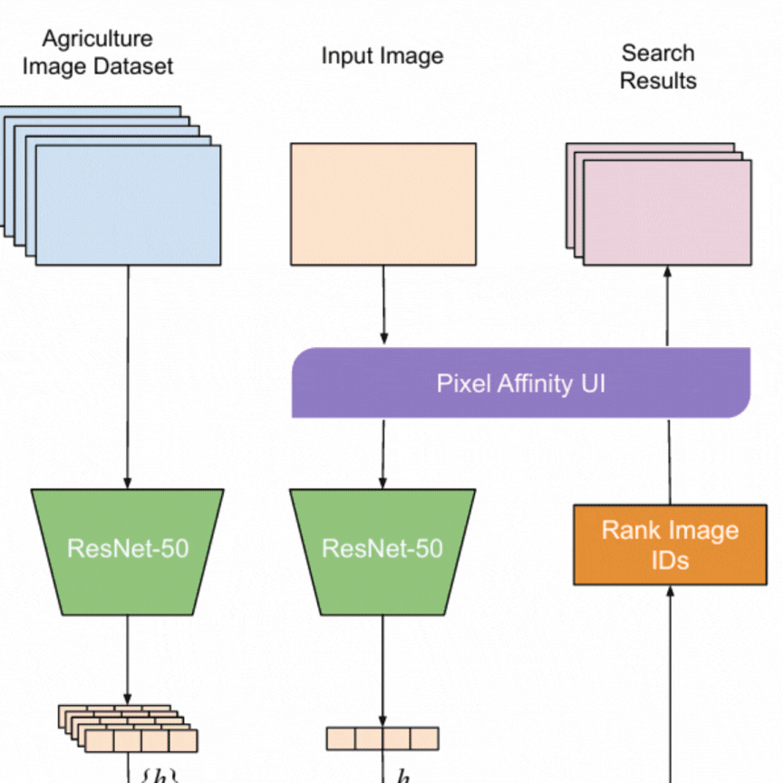

Hi! I’m Aniket. 👋
I’m a data scientist from India. I make music and use satellite imagery to monitor stuff.
Graduated from IIT Madras and creator of Unseen Parallels
You can read more about my work here.
To get in touch with me see contact.
Recent
- PyTorch: Denoisy for in-browser low light photo denoiser
- Article: Recommendation Engines and Feelings - Towards Data Science
- Article: Tile Narrative: Scrollytelling with Grid Maps - Nightingale, Data Visualization Society
- Article: Lessons Learned From Creating Physical Data Visualizations - Nightingale, DVS
Some Projects

Denoisy Image super resolution and denoising.

Cloud Removal with CMSN Implementation of a Coarse to Refined Network to evaluate the NDVI Values

Agri-scene classifier using simCLR Implementation of SimCLR using a Resnet-18 backbone identification of suitable areas for agricultural activities.